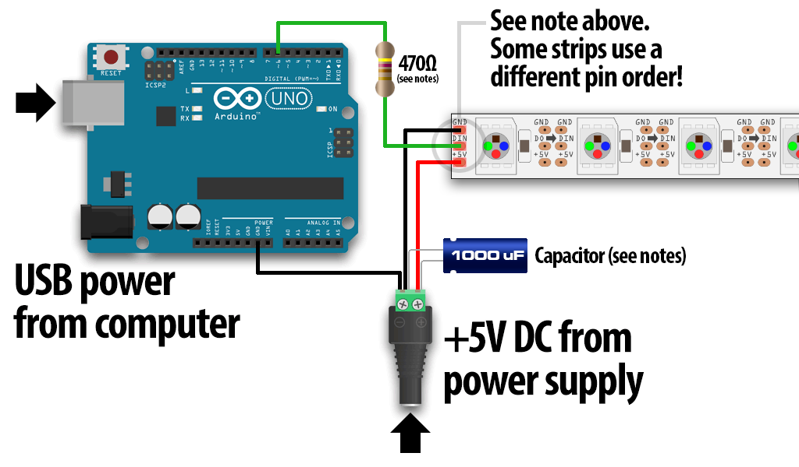
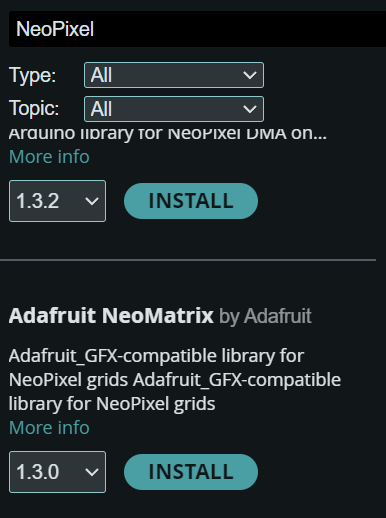
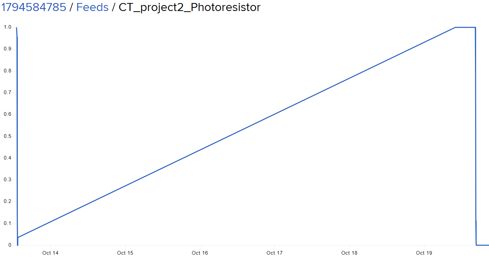
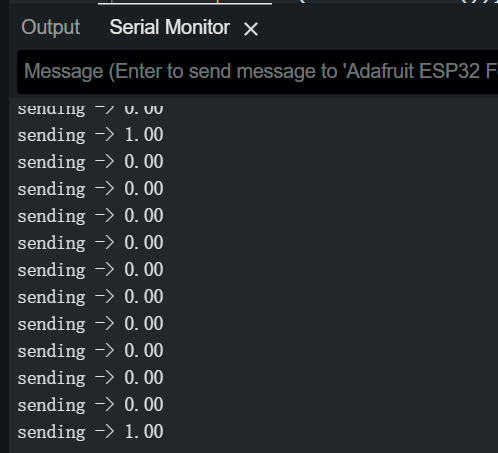
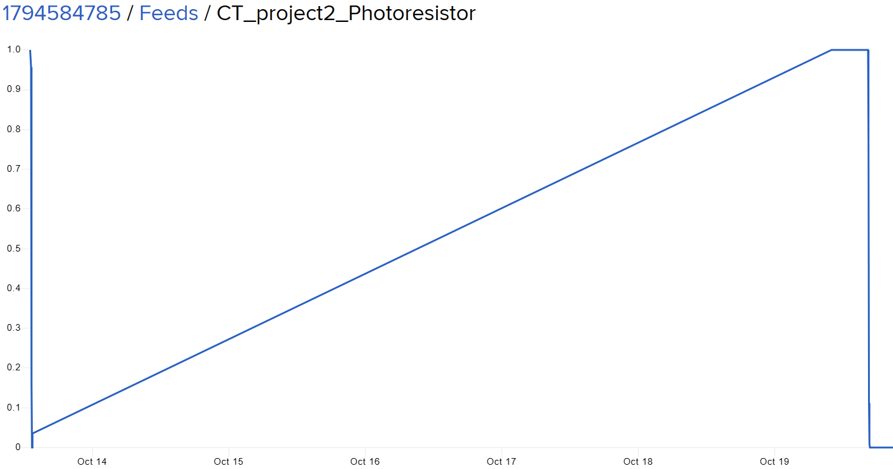
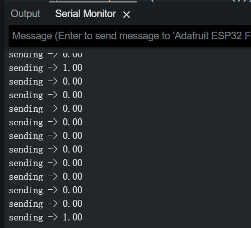
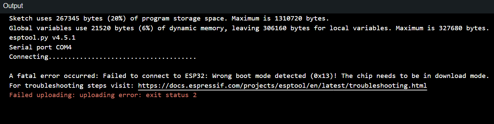

At the very beginning, we tried to create a loop that a flower would bloom triggered by something ( sound/light/vibration, etc.)
Diagrams of Process

Continuing in this vein, after a few successive iterations, we drew our earliest diagram, which clearly labeled the parts that the two ports were responsible for. Before the process starts, a noise trigger above a certain threshold is sent to port1, which then turns on the projector and shines the image on the photosensitive resistor, causing a change in its resistance, and sends a signal to the adafruit.io feeds when the resistance changes to a certain value. port2 starts the process when it receives a resistance value of the photosensitive resistor that is less than a certain threshold. The servo motor drives the paper flower to open while the noise generated by the servo motor is received by the sound sensor. The sound sensor transmits the noise in decibels to adafruit.io's feeds to be received by port1, which starts a new loop when the decibels exceed a certain threshold.
.jpg)
In the October 13th class, realizing that it would be a bit complicated to use the projector, we replaced it with a strip of lights that could be driven by the esp32 that also glowed.
I completed the port1 section and my partner completed the port2 section.
Circuit components to be used:

1:ACEIRMC 6pcs MB102 Breadboard Power Supply Module. ( Used as a power bridge.)
2:4.5V battery package
3:a 1k Ohm/ a 220 Ohm Resistor
4:4.7k μF capacitance
5:Esp 32 Feather.

7:Adafruit NeoPixel Digital RGB LED Strip
This components need to be solderinged

Connection Scheme:

Notice:
You may need to add a capacitor (100 to 1000 µF, 6.3V or higher) across the + and - terminals for more reliable operation.

8:Photosensitive Resistor

Porcess:
Download and install the driver for the LED strip

Coding for LED Strip and Photoresistor


Test ESP32
I did a Test of the esp32 using the most basic push buttons, so far everything works fine and the esp32 sends data to adafruit.io
 



The pushbuttons can correctly process the 0 and 1 through the DIGITAL signal.
But after that, the esp32 rarely connects to the computer correctly anymore, even if I re-download and install the drivers.

This error is often found in the Arduino IDE.
I have tried many ways to let my board get into Download mod.
I tried to ask Maxim, he give me a link which tell me before me upload, hold down both the BOOT and EN buttons. Release the EN button
At very beginning, the method works One out of ten times, But it didn't work after that.
Some one tell me that connect the Analog terminal last, as it is possible that the potential difference is causing the inability to upload. But that won't work either.
My esp32 works on other computers, but other people's esp32s don't work on mine, and I've swapped out many pieces of esp32 with this result.Can basically confirm that the problem is not with the hardware but with my computer.
.png)
I uninstalled all drivers and libraries related to esp32 and reinstalled them, but the problem persists.
I re-used my familiar Arduino Uno as a test, and the LEDs and photoresistors worked. I can rule out that the problem is from the Arduino IDE